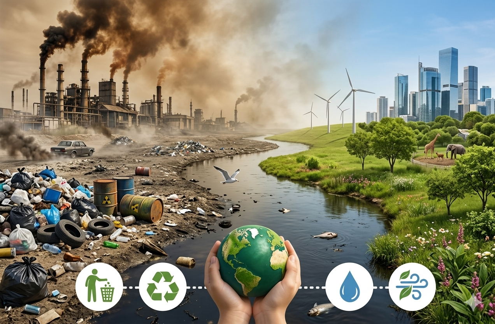

ما هي البيئة؟
ملخص سريع عن الوسط الذي نعيش فيه.
- البيئة تضم الإنسان والحيوان والنبات.
- تشمل الماء والهواء والتربة.
- نظافة البيئة تساعد على حياة صحية ومتوازنة.
في هذا الدرس سنتعرّف إلى معنى التلوث وأنواعه المختلفة، وكيف يمكننا حماية البيئة من الأوساخ والدخان والنفايات.
ملخص سريع عن الوسط الذي نعيش فيه.

خطوات بسيطة تصنع فرقاً كبيراً.

يحدث عندما تصل النفايات والمواد الضارة إلى الماء.

نوعان يؤثران مباشرة في الصحة والزراعة.

اسأل مغامر
اكتب سؤالك وشاهد الصورة الرمزية وهي ترد وحدها.
شاهد هذا الفيديو لتتعرف أكثر إلى كيفية حماية البيئة وتقليل التلوث.
جرّب لعبة جديدة تماماً، واضغط فقط على الأشياء التي تلوث البيئة في كل مرحلة.
افتح اللعبة الجديدةنرمي القمامة في السلة ونحافظ على نظافة المكان.
نقلل من استعمال البلاستيك ونستعمل الأشياء أكثر من مرة.
نزرع الأشجار ونحافظ على الماء والهواء النظيف.